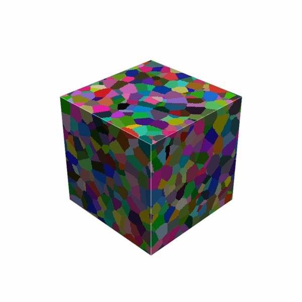
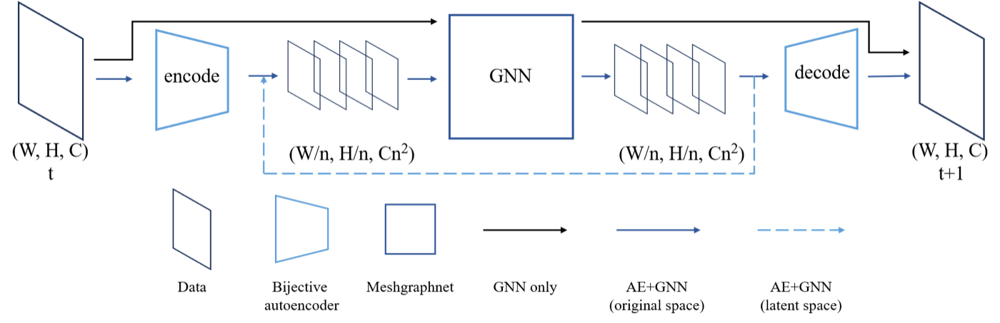

I am a Ph.D. candidate in Electrical and Computer Engineering at the University of Florida, working in the SmartDATA Lab with Prof. Joel B. Harley. Since 2025 I have also been collaborating with Lawrence Livermore National Laboratory on scalable surrogate models for materials simulation. I expect to graduate in Spring 2027.
My research develops scalable, physics-guided machine learning for 3D microstructure evolution. I build graph neural network and hybrid CNN–GNN surrogates that emulate grain growth on large 3D meshes, and physics-regularized models that stay stable and interpretable over long time horizons. Recent work includes a hybrid autoencoder–GNN surrogate that cuts memory by up to 117× and runtime by 115× on 160³ meshes relative to a GNN-only baseline, a Gaussian-sampled mode filter that improves on Monte Carlo Potts models for grain boundary motion, and deep-learning pipelines (U-Net, Segment Anything) for segmenting experimental TEM and Lab-DCT microstructure data.
More broadly, I am interested in scientific machine learning, surrogate modeling for simulation, and computer vision for experimental data. My work has been published in Acta Materialia, Materials & Design, IEEE Transactions on Industrial Informatics, Structural Health Monitoring, and IEEE IGARSS.
I am on the job market. I am seeking research scientist / machine learning engineer roles in industry and postdoctoral positions in scientific ML, materials informatics, or related areas. Please feel free to reach out by email. My CV is available here.
🔥 News
- 2026.07: 🎉 Gave a talk on 3D-PRIMME for learning grain growth from simulated and experimental data at AIM 2026, TMS Specialty Congress, Anaheim.
- 2026.07: 📄 Preprint of 3D-PRIMME: A scalable physics-guided machine learning framework for 3D grain growth (Materials & Design) is on arXiv.
- 2025.11: 📄 Preprint of Scaling kinetic Monte-Carlo simulations of grain growth with combined convolutional and graph neural networks is on arXiv; now published in Acta Materialia.
- 2025.09: 🤝 Started a collaborative research project with Lawrence Livermore National Laboratory on scalable surrogate models for materials simulation.
📝 Publications

3D-PRIMME: A scalable physics-guided machine learning framework for 3D grain growth
Zhihui Tian, Kang Yang, Vishal Yadav, Amanda R. Krause, Michael R. Tonks, Joel B. Harley
Materials & Design, 2026 | arXiv | Demo
- A physics-guided model that learns local grain-boundary evolution rules from Monte Carlo Potts simulations and transfers from a 100³ training domain to volumes up to 1024³ without retraining, reproducing grain-growth kinetics and topological statistics.

Zhihui Tian, Ethan Suwandi, Tomas Oppelstrup, Vasily V. Bulatov, Joel B. Harley, Fei Zhou
Acta Materialia, 311, 122153, 2026 | DOI | arXiv
- A hybrid autoencoder–GNN surrogate that evolves microstructures in a compressed latent space, using up to 117× less memory and running up to 115× faster than a GNN-only baseline on meshes up to 160³.
- Beyond curvature-driven grain growth: Insights from fully anisotropic Monte Carlo Potts simulations, Lin Yang, Vivekanand Muralikrishnan, Vishal Yadav, Zhihui Tian, Joel B. Harley, Amanda Krause, Michael Tonks, Acta Materialia 2026
- Improved PCA reconstruction-based unsupervised anomaly detection in uncontrolled structural health monitoring with correntropy, Kang Yang, Zhenhan Lin, Zekun Yang, Zhihui Tian, Jie Ma, José C. Príncipe, Joel B. Harley, IEEE Transactions on Industrial Informatics 2025
- Baseline optimized autoencoder-based unsupervised anomaly detection in uncontrolled dynamic structural health monitoring, Kang Yang, Tianqi Liu, Zekun Yang, Yang Zhou, Zhihui Tian, Nam H. Kim, Joel B. Harley, Structural Health Monitoring 2025
- Quantifying heterogeneous ecosystem services with multi-label soft classification, Zhihui Tian, John Upchurch, G. Austin Simon, José Dubeux, Alina Zare, Chang Zhao, Joel B. Harley, IEEE IGARSS 2024
- Weight decay optimized unsupervised autoencoder-based anomaly detection in uncontrolled dynamic structural health monitoring, Kang Yang, Zekun Yang, Zhihui Tian, Joel B. Harley, DDDAS 2024 (LNCS)
🎬 Demo
3D grain growth predicted by 3D-PRIMME. Starting from an initial microstructure, the model evolves the entire volume step by step: grain boundaries migrate, small grains shrink and disappear, and the structure coarsens into fewer, larger grains while preserving the expected kinetics and topology. See the paper.
💬 Talks
- 2026.07, 3D PRIMME for Learning Grain Growth Behaviors from Simulated and Experimental Datasets, contributed talk, AIM 2026 (TMS Specialty Congress 2026), Anaheim, CA. | [program]
- 2025.06, Machine Learning of Mode Filter Grain Growth Model Characteristics, contributed talk, AIM 2025 (TMS Specialty Congress 2025), Anaheim, CA.
- 2025.03, Grain Growth Modeling in the Fast Lane: Python, GPUs, and Machine Learning Approaches, half-day short course (co-instructor with Michael Tonks and Joel B. Harley), TMS 2025 Annual Meeting & Exhibition, Las Vegas, NV. | [course]
- 2024.07, Quantifying Heterogeneous Ecosystem Services with Multi-Label Soft Classification, oral presentation, IEEE IGARSS 2024, Athens, Greece.
- 2024.06, Impact of Different Training Datasets on Machine Learning Based Grain Growth Model and Grain Growth Kinetics, contributed talk, AIM 2024 (TMS Specialty Congress 2024), Cleveland, OH.
💻 Experience
- 2025.09 - now, Collaborative Research Project, Lawrence Livermore National Laboratory. Hybrid autoencoder–GNN surrogate for 3D grain growth: latent-space inference strategy, scalability studies (up to 117× lower memory and 115× faster runtime on 160³ meshes), and quantitative statistical benchmarking against Monte Carlo ground truth.
- 2023.05 - now, Graduate Research Assistant, SmartDATA Lab, University of Florida. Physics-regulated, interpretable ML for 3D microstructure evolution (3D-PRIMME); a Gaussian-sampled mode filter for learning and emulating grain growth; computer vision pipelines (U-Net, Segment Anything) for TEM and Lab-DCT microstructure data.
📖 Education
- 2023.05 - now, Ph.D. in Electrical and Computer Engineering, University of Florida, Gainesville, FL. Advisor: Prof. Joel B. Harley. Expected graduation: Spring 2027.
- 2021.08 - 2023.05, M.S. in Electrical and Computer Engineering, University of Florida, Gainesville, FL.